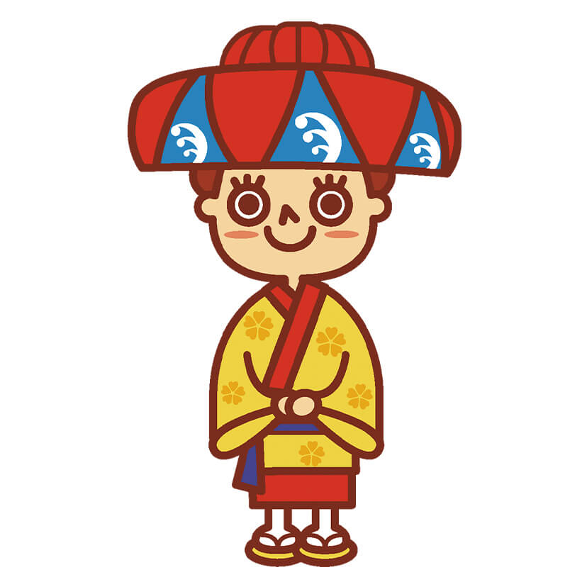

花笠マハエ・マハ朗｜沖縄観光コンベンションビューロー
本文の保存版（2026-11-22）
出典URL：https://www.ocvb.or.jp/activities/mahae
花笠マハエ・マハ朗
マハエの沖縄ダイアリー
身近な話題から注目のニュースまで、沖縄各地の気になる情報をマハエがレポート！
- プロフィール
- 活動内容
プロフィール
花笠マハエ
マハ朗
沖縄観光PR大使
花笠マハエ
HANAGASA MAHAE
沖縄に関するイベントなら、県内だけではなく、県外イベントへもお出かけしちゃいます。 美味しいものを食べたり、いろんなところへお出かけするのが大好き。好奇心旺盛なアウトドア派。嬉しくなるとカチャーシーをついつい踊りだしてしまいます。

マハ朗
MAHALO
沖縄と世界を繋ぐ架け橋になることを志し、ハワイからやってきました。 趣味はサーフィン、ウクレレ、空手。ひそかに想いを寄せているマハエちゃんに、男らしい姿を見せれるよう、 三線と空手を特訓中。
活動内容
国内外における沖縄のPRを目的としたイベントや歓迎式などにキャラクターを派遣することができます。
詳細は「よくある質問」をご覧ください。
よくある質問はこちら
マハエの沖縄ダイアリー
ブログ記事一覧
SNS
沖縄観光PR大使として国内外の沖縄観光関連イベントなどに登場し、親善交流を行います。沖縄の魅力的な観光地や最新情報をSNSで発信しています。
お問い合わせ
派遣に関するお問い合わせ
イラスト利用に関するお問い合わせ
- 総務部 総務・経理課 花笠マハエ担当
- TEL : 098-859-6124 FAX : 098-859-6221 MAIL：mahae@ocvb.or.jp
地図で使用する画像
- 花笠マハエの画像
https://www.ocvb.or.jp/res/img/activities/mahae/profile_mahae.jpg - 花笠マハエの画像（予備）
https://www.dee-okinawa.com/character/assets_c/2013/11/mahae-thumb-400x400-21184.jpg